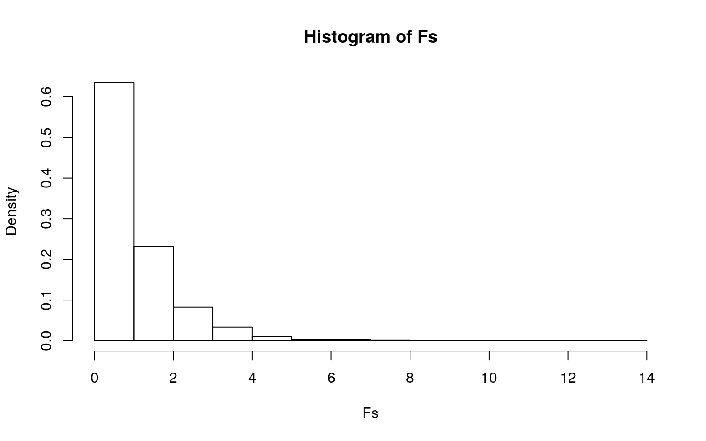
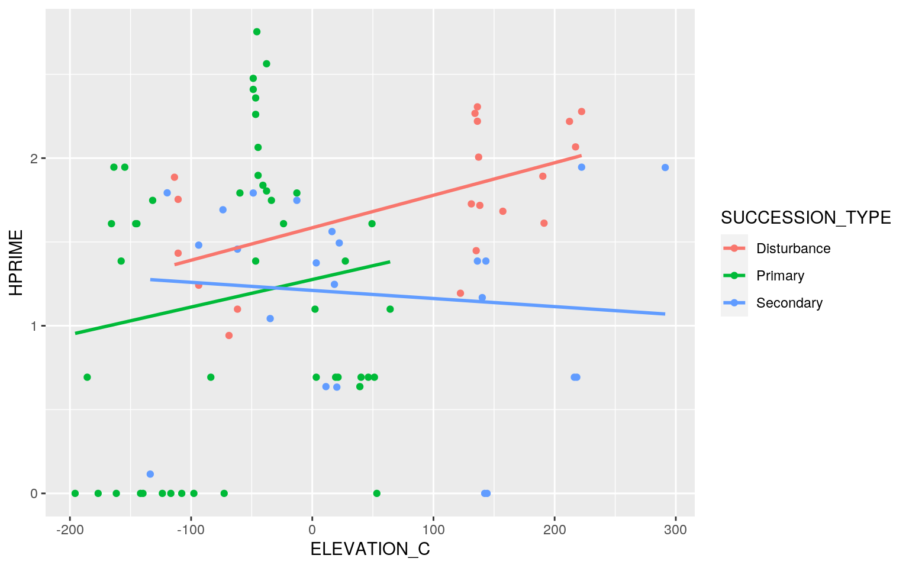
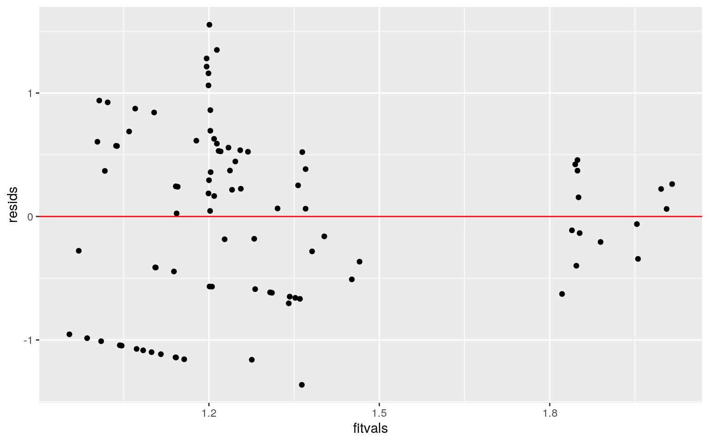
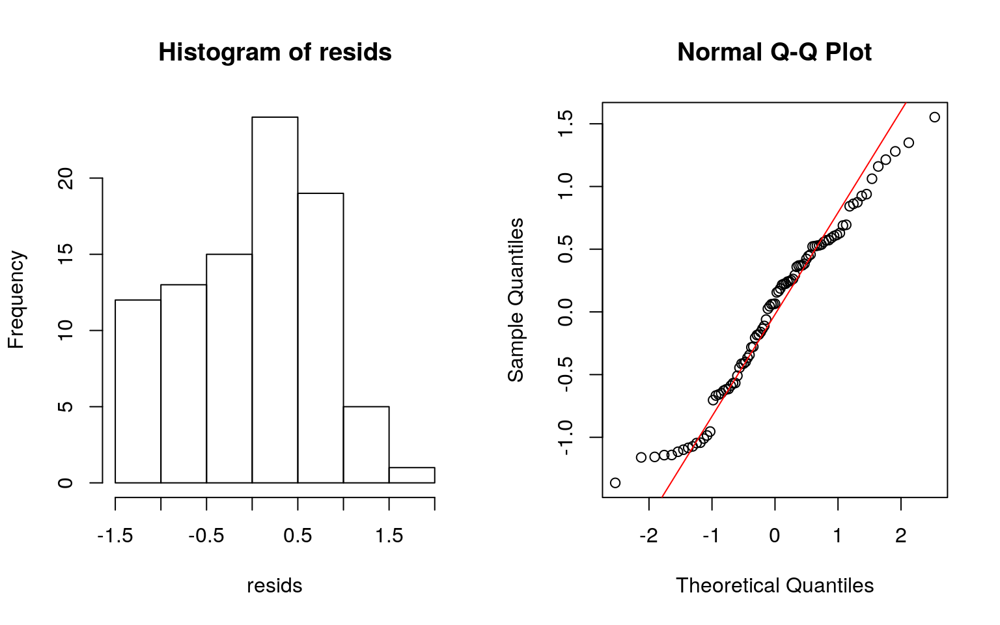
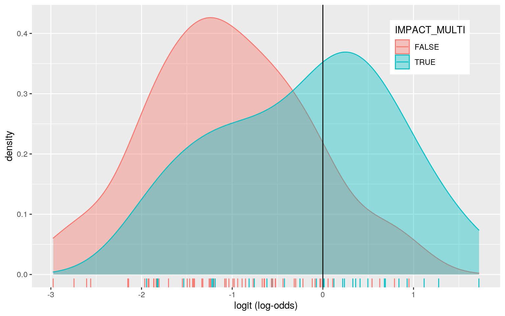
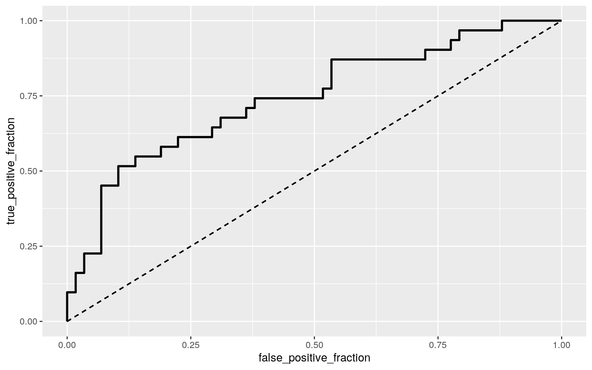
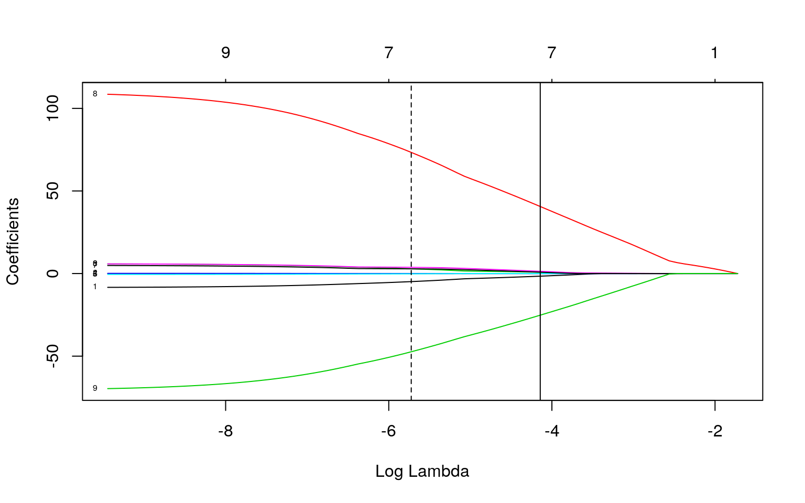

My project will use data from quadrat surveys of plant cover on Mt St. Helens from 1995 to 2009. A joined dataset featuring quadrat cover information (richness, diversity, etc) with a dataset containing plot descriptors (coordinates, succession type, etc), was joined by Plot ID to be used for this project. The variables of interest here include: primary impact type, succession type (categorical); percent cover, richness, H prime (Shannon diversity index) and elevation (numeric); and multiple vs. single impact (binary). There are 89 observations total of each of these variables.
structure <- read_csv("MSH_STRUCTURE_PLOT_YEAR.csv")
descriptors <- read_csv("MSH_PLOT_DESCRIPTORS.csv")structure %>% unite("PLOT_CODE", 2:3) -> structure_final
descriptors <- descriptors%>%mutate(IMPACT_MULTI = case_when(
str_detect(IMPACT_TYPE, ";") ~ TRUE,
TRUE ~ FALSE))
descriptors_final <- descriptors %>% separate(PLOT_CODE,into = c("PLOT_NAME","PLOT_NUM
BER"), sep=4, convert=T) %>% structure %>% unite("PLOT_CODE", 2:3) %>%
separate(IMPACT_TYPE,into = c("IMPACT_TYPE_1","IMPACT_TYPE_2","IMPACT_TYPE_3"), sep=";", convert=T)
structure_final <- structure_final %>% group_by(PLOT_CODE) %>% slice(1)
structure_final %>% subset(PLOT_CODE!="BUCC_4") -> structure_final
descriptors_final %>% subset(PLOT_CODE!="PUPL_10") -> descriptors_final
descriptors_final %>% subset(PLOT_CODE!="PUPL_11") -> descriptors_final
descriptors_final %>% subset(PLOT_CODE!="PUPL_12") -> descriptors_final
descriptors_final[30, "PLOT_CODE"] <- "LAHR_4"
descriptors_final[31, "PLOT_CODE"] <- "LAHR_5"
descriptors_final[32, "PLOT_CODE"] <- "LAHR_6"
descriptors_final[33, "PLOT_CODE"] <- "LAHR_7"
descriptors_final[34, "PLOT_CODE"] <- "LAHR_8"
full_join(descriptors_final,structure_final,by="PLOT_CODE") -> plots_joinedDo the variables H prime, percent cover, and richness show a mean difference across succession type?
H prime, percent cover, and richness showed signififcant differences in means across succession type (univariate ANOVAs; p-values<.05). After completing 1 MANOVA, 3 ANOVAs, 9 t-tests (13 tests) the probability of a Type I error is about 0.49, and the adjusted p-value to be used is 0.004. After this adjustement, there is a significant difference in mean percent cover between primary and disturbance, as well as secondary and disturbance habitat types; there is also a significant difference in mean richness between primary and disturbance; and secondary and disturbance habitat types.
The assumption of multivariate normality for MANOVA was violated for each numeric variable (Shapiro test; p-values all <.05).
#Checking Assumptions
library(rstatix)
group <- plots_joined$SUCCESSION_TYPE
DVs <- plots_joined %>% select(HPRIME,COVER_PERCENT,RICHNESS)
#Test multivariate normality for each group (ALL VIOLATED)
sapply(split(DVs,group), mshapiro_test)## Disturbance Primary Secondary
## statistic 0.6668708 0.3892868 0.78086
## p.value 1.57977e-05 1.40833e-12 0.000192227#Performing test
man1<-manova(cbind(HPRIME,COVER_PERCENT,RICHNESS)~SUCCESSION_TYPE, data=plots_joined)
summary(man1)## Df Pillai approx F num Df den Df Pr(>F)
## SUCCESSION_TYPE 2 0.65582 13.824 6 170 9.048e-13 ***
## Residuals 86
## ---
## Signif. codes: 0 '***' 0.001 '**' 0.01 '*' 0.05 '.' 0.1
' ' 1summary.aov(man1)## Response HPRIME :
## Df Sum Sq Mean Sq F value Pr(>F)
## SUCCESSION_TYPE 2 5.074 2.53682 4.8693 0.009924 **
## Residuals 86 44.805 0.52099
## ---
## Signif. codes: 0 '***' 0.001 '**' 0.01 '*' 0.05 '.' 0.1
' ' 1
##
## Response COVER_PERCENT :
## Df Sum Sq Mean Sq F value Pr(>F)
## SUCCESSION_TYPE 2 7560.7 3780.3 72.631 < 2.2e-16 ***
## Residuals 86 4476.2 52.0
## ---
## Signif. codes: 0 '***' 0.001 '**' 0.01 '*' 0.05 '.' 0.1
' ' 1
##
## Response RICHNESS :
## Df Sum Sq Mean Sq F value Pr(>F)
## SUCCESSION_TYPE 2 963.12 481.56 23.109 9.29e-09 ***
## Residuals 86 1792.16 20.84
## ---
## Signif. codes: 0 '***' 0.001 '**' 0.01 '*' 0.05 '.' 0.1
' ' 1plots_joined%>%group_by(SUCCESSION_TYPE)%>%
summarize(mean(HPRIME),mean(COVER_PERCENT),mean(RICHNESS))## # A tibble: 3 x 4
## SUCCESSION_TYPE `mean(HPRIME)` `mean(COVER_PERCENT)`
`mean(RICHNESS)`
## <chr> <dbl> <dbl> <dbl>
## 1 Disturbance 1.75 23.2 13.2
## 2 Primary 1.17 0.833 5.30
## 3 Secondary 1.19 1.64 5.35pairwise.t.test(plots_joined$HPRIME,plots_joined$SUCCESSION_TYPE, p.adj="none")##
## Pairwise comparisons using t tests with pooled SD
##
## data: plots_joined$HPRIME and
plots_joined$SUCCESSION_TYPE
##
## Disturbance Primary
## Primary 0.0037 -
## Secondary 0.0125 0.9445
##
## P value adjustment method: nonepairwise.t.test(plots_joined$COVER_PERCENT,plots_joined$SUCCESSION_TYPE, p.adj="none")##
## Pairwise comparisons using t tests with pooled SD
##
## data: plots_joined$COVER_PERCENT and
plots_joined$SUCCESSION_TYPE
##
## Disturbance Primary
## Primary < 2e-16 -
## Secondary 1.4e-15 0.66
##
## P value adjustment method: nonepairwise.t.test(plots_joined$RICHNESS,plots_joined$SUCCESSION_TYPE, p.adj="none")##
## Pairwise comparisons using t tests with pooled SD
##
## data: plots_joined$RICHNESS and
plots_joined$SUCCESSION_TYPE
##
## Disturbance Primary
## Primary 6.1e-09 -
## Secondary 2.3e-07 0.97
##
## P value adjustment method: noneBecause the assumptions of the MANOVA above were violated, I decided to run a randomized one way ANOVA to compare whether the previous results for richness across succession type were still significant.
Ho: Mean richness for all succession types are equal
Ha: Mean richness differs in at least one sucession type
The p-value is 0 (far less than <.05)for this randomized ANOVA; therefore, we can reject the null hypothesis that the mean richness is equal across all succession types.
summary(aov(RICHNESS~SUCCESSION_TYPE,data=plots_joined))## Df Sum Sq Mean Sq F value Pr(>F)
## SUCCESSION_TYPE 2 963.1 481.6 23.11 9.29e-09 ***
## Residuals 86 1792.2 20.8
## ---
## Signif. codes: 0 '***' 0.001 '**' 0.01 '*' 0.05 '.' 0.1
' ' 1obs_F <- 23.11
Fs<-replicate(5000,{
new<-plots_joined%>%mutate(RICHNESS=sample(RICHNESS))
SSW<- new%>%group_by(SUCCESSION_TYPE)%>%summarize(SSW=sum((RICHNESS-mean(RICHNESS))^2))%>%summarize(sum(SSW))%>%pull
SSB<- new%>%mutate(mean=mean(RICHNESS))%>%group_by(SUCCESSION_TYPE)%>%mutate(groupmean=mean(RICHNESS))%>%
summarize(SSB=sum((mean-groupmean)^2))%>%summarize(sum(SSB))%>%pull
(SSB/2)/(SSW/86)
})
#null distribution plot with observed F-statistic
hist(Fs, prob=T); abline(v = obs_F, col="red", add=T)
mean(Fs>obs_F)## [1] 0Here I built a linear regression model predicting H prime (diversity index) from elevation and succession type. The coefficients can be interpreted as follows:
Intercept: 1.585 is the predicted H prime for disturbance succession habitats of average elevation.
Elevation_C: Controlling for succession type, for each one unit increase in elevation there is an average increase in H prime of 0.0019.
Succession_TypePrimary: Controlling for elevation, H prime in the primary succession type group is 0.309 units lower than in the disturbance succession type group on average.
Succession_TypeSecondary: Controlling for elevation, H prime in the secondary type group is 0.379 units lower than in the disturbance succession type group on average.
Elevation_C:Succession_TypePrimary: The slope for elevation on H prime is 0.00029 lower for primary succession type habitats compared to disturbance type habitats.
Elevation_C:Succession_TypeSecondary: The slope for elevation on H prime is 0.0024 lower for secondary succession type habitats compared to disturbance type habitats.
The assumption of homoskedasticity was violated (BP test p value <.05); the normality assumption may be violated as well, as the QQ plot skews significantly at either end. The linearity assumption seems to be met.
Robust standard errors were applied, and the significance of two coefficients changed. Elevation_c and Succession_TypeSecondary are now significant (p-value 0.0093 and p-value 0.048).
The model explains 8.8% of the variation in H prime, given from an adjusted R-squared value of 0.08762.
plots_joined$ELEVATION_C <- plots_joined$ELEVATION - mean(plots_joined$ELEVATION)
linreg <-lm(HPRIME~ELEVATION_C*SUCCESSION_TYPE, data=plots_joined)
summary(linreg)##
## Call:
## lm(formula = HPRIME ~ ELEVATION_C * SUCCESSION_TYPE,
data = plots_joined)
##
## Residuals:
## Min 1Q Median 3Q Max
## -1.3635 -0.5684 0.0652 0.5274 1.5532
##
## Coefficients:
## Estimate Std. Error t value Pr(>|t|)
## (Intercept) 1.5847165 0.1966201 8.060 4.95e-12 ***
## ELEVATION_C 0.0019377 0.0013293 1.458 0.149
## SUCCESSION_TYPEPrimary -0.3087291 0.2399605 -1.287 0.202
## SUCCESSION_TYPESecondary -0.3738601 0.2554273 -1.464
0.147
## ELEVATION_C:SUCCESSION_TYPEPrimary -0.0002944 0.0019340
-0.152 0.879
## ELEVATION_C:SUCCESSION_TYPESecondary -0.0024206
0.0018327 -1.321 0.190
## ---
## Signif. codes: 0 '***' 0.001 '**' 0.01 '*' 0.05 '.' 0.1
' ' 1
##
## Residual standard error: 0.7191 on 83 degrees of freedom
## Multiple R-squared: 0.1395, Adjusted R-squared: 0.08762
## F-statistic: 2.69 on 5 and 83 DF, p-value: 0.0265plots_joined %>% ggplot(aes(ELEVATION_C,HPRIME,color=SUCCESSION_TYPE))+
geom_point()+geom_smooth(method="lm", se=F)
#Checking Assumptions (linearity, homoskedasticity, normality)
resids<-linreg$residuals
fitvals<-linreg$fitted.values
ggplot()+geom_point(aes(fitvals,resids))+geom_hline(yintercept=0, color='red')
par(mfrow=c(1,2)); hist(resids); qqnorm(resids); qqline(resids, col='red')
library(sandwich); library(lmtest)
bptest(linreg)##
## studentized Breusch-Pagan test
##
## data: linreg
## BP = 21.975, df = 5, p-value = 0.0005293#Adding robust standard errors
coeftest(linreg, vcov = vcovHC(linreg))##
## t test of coefficients:
##
## Estimate Std. Error t value Pr(>|t|)
## (Intercept) 1.58471654 0.11894042 13.3236 < 2.2e-16 ***
## ELEVATION_C 0.00193767 0.00072729 2.6642 0.009269 **
## SUCCESSION_TYPEPrimary -0.30872911 0.19224171 -1.6059
0.112085
## SUCCESSION_TYPESecondary -0.37386012 0.18659206 -2.0036
0.048373 *
## ELEVATION_C:SUCCESSION_TYPEPrimary -0.00029443
0.00174902 -0.1683 0.866726
## ELEVATION_C:SUCCESSION_TYPESecondary -0.00242061
0.00163396 -1.4814 0.142276
## ---
## Signif. codes: 0 '***' 0.001 '**' 0.01 '*' 0.05 '.' 0.1
' ' 1Overall, the standard errors of the original, robust SEs, and the bootstrapped SEs are fairly similar; for example the intercept SE was 0.197, 0.119, and 0.187 respectively, with the robust SEs being the most different overall.
#Bootstrapping using residuals
linreg <-lm(HPRIME~ELEVATION_C*SUCCESSION_TYPE, data=plots_joined)
resids<-linreg$residuals
fitted<-linreg$fitted.values
resid_resamp<-replicate(5000,{
new_resids<-sample(resids,replace=TRUE)
plots_joined$new_y<-fitted+new_resids
linreg2<-lm(new_y~ELEVATION_C*SUCCESSION_TYPE,data=plots_joined)
coef(linreg2) #save coefficient estimates (b0, b1, etc)
})
## Estimated SEs
resid_resamp%>%t%>%as.data.frame%>%summarize_all(sd)## (Intercept) ELEVATION_C SUCCESSION_TYPEPrimary
SUCCESSION_TYPESecondary
## 1 0.1904413 0.001281507 0.228046 0.2451346
## ELEVATION_C:SUCCESSION_TYPEPrimary
ELEVATION_C:SUCCESSION_TYPESecondary
## 1 0.001843101 0.001762041Coefficient interpretations:
Intercept: Odds of having multiple impact types for disturbance succession type and elevation and richness of 0 is 70.09.
Elevation: Controlling for richness and succession type, for every one additional meter of elevation, odds of having multiple impact types deacrease by a factor of -0.005 (p-value=0.037).
Richness: Controlling for elevation and succession type, for every one unit increase in richness, odds of having multiple impact types increase by a factor of 0.150 (p-value=0.009).
Succession_TypePrimary: Controlling for elevation and richness, odds of having multiple impact types for primary succession habitats is 1.84 times odds of having multiple impact types for disturbance habitats (p-value=0.038)
Succession_TypeSecondary: Controlling for elevation and richness, odds of having multiple impact types for secondary succession habitats is 2.31 times odds of having multiple impact types for disturbance habitats (p-value=0.0105).
The accuracy is 0.764, sensitivity is 0.516, specificity is 0.897, precision is 0.727, and AUC is 0.742. Most of these measures are good, with the excpetion of sensitivity; it appears the model isn't very good at detecting multiple impact type in plots that have multiple. The AUC is the probability that a randomly selected plot with multiple impact types has a higher predicted probability than a randomly selected plot with only one impact type; therefore our AUC shows our model is doing a fair/decent job at predicting whether a plot has multiple impact types.
logreg<-glm(IMPACT_MULTI~ELEVATION+RICHNESS+
SUCCESSION_TYPE,data=plots_joined,family=binomial(link="logit"))
coeftest(logreg)##
## z test of coefficients:
##
## Estimate Std. Error z value Pr(>|z|)
## (Intercept) 4.2498003 3.7761529 1.1254 0.260406
## ELEVATION -0.0053856 0.0025807 -2.0868 0.036902 *
## RICHNESS 0.1497197 0.0572169 2.6167 0.008878 **
## SUCCESSION_TYPEPrimary 1.8445751 0.8874810 2.0784
0.037669 *
## SUCCESSION_TYPESecondary 2.3115575 0.9032394 2.5592
0.010492 *
## ---
## Signif. codes: 0 '***' 0.001 '**' 0.01 '*' 0.05 '.' 0.1
' ' 1exp(coef(logreg))## (Intercept) ELEVATION RICHNESS SUCCESSION_TYPEPrimary
## 70.0914169 0.9946289 1.1615086 6.3254115
## SUCCESSION_TYPESecondary
## 10.0901275#Confusion matrix
prob<-predict(logreg,type="response")
pred<-ifelse(prob>.5,1,0)
table(truth=plots_joined$IMPACT_MULTI, prediction=pred)%>%addmargins## prediction
## truth 0 1 Sum
## FALSE 52 6 58
## TRUE 15 16 31
## Sum 67 22 89#Accuracy, Sensitivity, Specificity, Precision
(52+16)/89 ; 16/31 ; 52/58 ; 16/22## [1] 0.7640449## [1] 0.516129## [1] 0.8965517## [1] 0.7272727#Density plot
plots_joined$logit<-predict(logreg,type="link")
plots_joined%>%ggplot()+geom_density(aes(logit,color=IMPACT_MULTI,fill=IMPACT_MULTI), alpha=.4)+
theme(legend.position=c(.85,.85))+geom_vline(xintercept=0)+xlab("logit (log-odds)")+
geom_rug(aes(logit,color=IMPACT_MULTI))
#ROC Curve
library(plotROC)
ROCplot<-ggplot(plots_joined)+geom_roc(aes(d=IMPACT_MULTI,m=prob), n.cuts=0)+
geom_segment(aes(x=0,xend=1,y=0,yend=1),lty=2)
ROCplot
calc_auc(ROCplot)## PANEL group AUC
## 1 1 -1 0.7424917For the model predicting multiple vs single impact types with all other variables (columns like year, plot ID, etc. were removed for convenience) the diagnostics are as follows: accuracy is 0.91, sensitivity is 0.839, specificity is 0.948, precision is 0.90, and AUC is 0.96; all are indicative of good predictive power.
plotdata <- plots_joined %>% select(EVENNESS,FREQUENCY,HPRIME,COVER_PERCENT,RICHNESS,SUCCESSION_TYPE,IMPACT_MULTI,POT_RAD,HEAT_LOAD)
logreg2<-glm(IMPACT_MULTI~.,data=plotdata,family="binomial")
coef(logreg2)## (Intercept) EVENNESS FREQUENCY HPRIME
## -37.98424988 -8.54875329 -0.04414733 5.98616431
## COVER_PERCENT RICHNESS SUCCESSION_TYPEPrimary
SUCCESSION_TYPESecondary
## 0.12953737 -0.54816767 5.97368304 5.01180488
## POT_RAD HEAT_LOAD
## 110.61212083 -70.94216197probs<-predict(logreg2,type="response")
#Class diag function
class_diag <- function(probs,truth){
#CONFUSION MATRIX: CALCULATE ACCURACY, TPR, TNR, PPV
tab<-table(factor(probs>.5,levels=c("FALSE","TRUE")),truth)
acc=sum(diag(tab))/sum(tab)
sens=tab[2,2]/colSums(tab)[2]
spec=tab[1,1]/colSums(tab)[1]
ppv=tab[2,2]/rowSums(tab)[2]
f1=2*(sens*ppv)/(sens+ppv)
if(is.numeric(truth)==FALSE & is.logical(truth)==FALSE) truth<-as.numeric(truth)-1
#CALCULATE EXACT AUC
ord<-order(probs, decreasing=TRUE)
probs <- probs[ord]; truth <- truth[ord]
TPR=cumsum(truth)/max(1,sum(truth))
FPR=cumsum(!truth)/max(1,sum(!truth))
dup<-c(probs[-1]>=probs[-length(probs)], FALSE)
TPR<-c(0,TPR[!dup],1); FPR<-c(0,FPR[!dup],1)
n <- length(TPR)
auc<- sum( ((TPR[-1]+TPR[-n])/2) * (FPR[-1]-FPR[-n]) )
data.frame(acc,sens,spec,ppv,f1,auc)
}
#Class diagnostics
class_diag(probs,plotdata$IMPACT_MULTI)## acc sens spec ppv f1 auc
## TRUE 0.9101124 0.8387097 0.9482759 0.8965517 0.8666667
0.9593993In this 10 fold CV of the above model, the diagnostics are as follows: accuracy is 0.854, sensitivity is 0.861, specificity is 0.885, precision is 0.795, and AUC is 0.93; all except sensitivity are less than the values from the original model above, indiciating the original model is overfitted.
k=10
data<-plotdata[sample(nrow(plotdata)),]
folds<-cut(seq(1:nrow(plotdata)),breaks=k,labels=F)
diags<-NULL
for(i in 1:k){
train<-data[folds!=i,]
test<-data[folds==i,]
truth<-test$IMPACT_MULTI
cv.fit<-glm(IMPACT_MULTI~.,data=train,family="binomial")
cv.probs<-predict(cv.fit,newdata = test,type="response")
diags<-rbind(diags,class_diag(cv.probs,truth))
}
summarize_all(diags,mean)## acc sens spec ppv f1 auc
## 1 0.8083333 0.7416667 0.8461905 0.75 0.7166667 0.8999206The variables retained by LASSO here are evenness, H prime, percent cover, primary succession type, secondary succession type, potential radiation, and heat load. These variables generally make sense in predicting whether a plot has multiple or single impact types (for instance, diversity measures like H prime and evenness would likely co-vary with different levels of impact); however, I am a bit surprised that heat load and potential radiation are retained, as on the surface I can't see them having much predictive power in whether a site has multiple or single impact types.
library(glmnet)
y<-as.matrix(plotdata$IMPACT_MULTI)
x<-model.matrix(IMPACT_MULTI~.,data=plotdata)[,-1]
glm(y~x,family=binomial)##
## Call: glm(formula = y ~ x, family = binomial)
##
## Coefficients:
## (Intercept) xEVENNESS xFREQUENCY
## -37.98425 -8.54875 -0.04415
## xHPRIME xCOVER_PERCENT xRICHNESS
## 5.98616 0.12954 -0.54817
## xSUCCESSION_TYPEPrimary xSUCCESSION_TYPESecondary
xPOT_RAD
## 5.97368 5.01180 110.61212
## xHEAT_LOAD
## -70.94216
##
## Degrees of Freedom: 88 Total (i.e. Null); 79 Residual
## Null Deviance: 115.1
## Residual Deviance: 44 AIC: 64cv <- cv.glmnet(x,y, family="binomial")
{plot(cv$glmnet.fit, "lambda", label=TRUE); abline(v = log(cv$lambda.1se)); abline(v = log(cv$lambda.min),lty=2)}
cv<-cv.glmnet(x,y,family="binomial")
lasso<-glmnet(x,y,family="binomial",lambda=cv$lambda.1se)
coef(lasso)## 10 x 1 sparse Matrix of class "dgCMatrix"
## s0
## (Intercept) -11.2832352
## EVENNESS -0.3672600
## FREQUENCY .
## HPRIME 0.3322982
## COVER_PERCENT -0.0492283
## RICHNESS .
## SUCCESSION_TYPEPrimary 0.3556038
## SUCCESSION_TYPESecondary .
## POT_RAD 28.9711091
## HEAT_LOAD -16.6730954In this 10 fold CV of the LASSO-selected model, the diagnostics are as follows: accuracy is 0.86, sensitivity is 0.815, specificity is 0.894, precision is NA, and AUC is 0.917. The out of sample AUC here of 0.917 is actually less than the out of sample AUC of the original regression (0.93).
k=10
data1 <- plotdata %>% sample_frac
folds1 <- ntile(1:nrow(data1),n=10)
diags1<-NULL
for(i in 1:k){
train1 <- data1[folds1!=i,]
test1 <- data1[folds1==i,]
truth1 <- test1$IMPACT_MULTI
cv.fit2 <- glm(IMPACT_MULTI~EVENNESS+HPRIME+COVER_PERCENT+SUCCESSION_TYPE+POT_RAD+HEAT_LOAD,
data=train1, family="binomial")
cv.probs2 <- predict(cv.fit2, newdata=test1, type="response")
diags<-rbind(diags,class_diag(cv.probs2,truth1))
}
diags%>%summarize_all(mean)## acc sens spec ppv f1 auc
## 1 0.81875 0.7583333 0.8689286 0.7791667 0.7400397
0.9017659